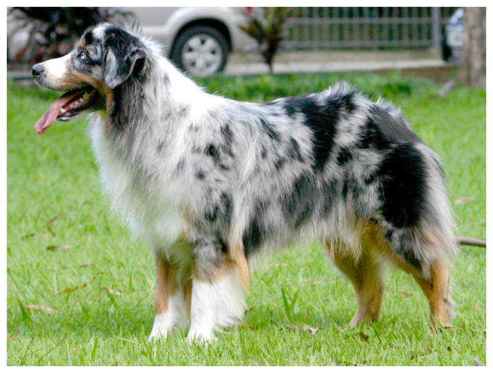

Porque debería adoptar un pastor australiano
Razones por las que quiero un pastor
australiano
Razones en ningún orden en especifíco
- Son esponjosos
- Puede salir a correr conmigo
- Si corre conmigo espanta si un señor se me acerca
- Puede ser amix del perrito de Melba
- Le enseño trucos y cumplo mi sueño de ser entrenadora pokemon